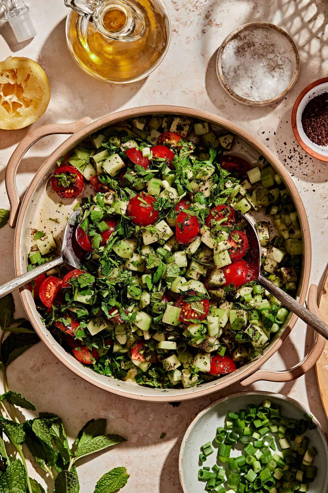

Home
Armenian Salad

Description
Armenian salad is a vibrant and refreshing dish made with crisp cucumbers,
juicy tomatoes, and a medley of fresh greens. Dressed simply with olive oil,
salt, and pepper, it highlights the natural flavors of the ingredients.
This light and wholesome salad is perfect as a side dish or a healthy snack,
offering a burst of freshness in every bite.
Ingredients
- 3 cucumbers
- 2 tomatoes
- 1/4 red onion
- 2 green onions
- 1/3 bunch of cilantro
- 1/3 bunch of purple basil
- 1/3 bunch of tarragon
- 1/3 bunch of dill
- salt
- pepper
- 1 tbsp olive oil
Steps
- Slice the cucumbers, tomatoes, and onions, then place them into a bowl.
- Chop the remainder of the green ingredients and place them into the bowl.
- Add the olive oil and salt and pepper to taste.
- Mix and enjoy!